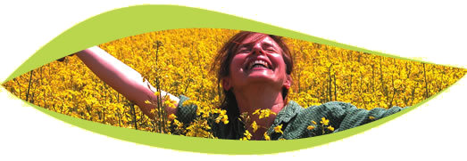

Links
Alf Jasinski
Alf Jasinski, selbst jahrelang Mitglied des M.O.H.L.A.-Ordens (Mystischer Orden Hermetischer Lehren Antons - aufgelöst am 21.3.2006), wurde beauftragt, das Wissen des Ordens der Öffentlichkeit zugänglich zu machen. Unter Zuhilfenahme der Tagebuchaufzeichnungen seines Freundes Frater Thalus von Athos klärt der Autor über irdische, innerirdische und außerirdische Zusammenhänge auf. Nicht Spekulationen, sondern Erfahrungsberichte sind Grundlage seiner Werke. Soziale, Wirtschaftliche und politische Misstände werden auf verständliche und spritzige Weise erklärt. Mysterien, wie Religion, menschliche Evolution, außerirdische Einflußnahme, der Mythos Innererde und Konträre Ordensinhalte werden aufgeschlüsselt.
Andrea Lettow - Mentalcoaching
Seele, Geist und Körper stehen miteinander in Wechselwirkung, wobei die geistige Einstellung zur Erreichung von Zielen weitaus effektiver ist, als größte körperliche Anstrengungen.
Cellagon Homepage
Hochwertige Lebensmittel für eine gesunde Ernährung
Christina von Dreien
Christina von Dreien ist eine 18-jährige junge Frau, die mit einer multidimensionalen Wahrnehmung und mit anderen paranormalen Begabungen gesegnet ist und einen völlig natürlichen Umgang damit zeigt. Denn diese Fähigkeiten sind nur Nebenerscheinungen ihres wahren Seins. Sie gehört zu einer neuen Generation von jungen, evolutionären Denkern und überzeugt mit einer hohen Ethik, offensichtlicher Weisheit und tiefem inneren Frieden. Christina ist ein junge Frau unserer Zeit, die aus tiefstem Innern gewillt und bereit ist, ihr Dasein in den Dienst eines globalen Wandels hin zum Positiven und Konstruktiven zu stellen.
Kreiszeit
KreisZeit-Seminare bieten dir einen kompetenten Rahmen voller Freude, Herzberührung und Gemeinschaft auf Zeit, um zeitgemäßes schamanisches Wissen und Zeremonien kennen zu lernen. Unsere Angebote wie Visionssuche, Schwitzhüttenzeremonien, Männerseminare und Frauenkreise, Natur- und Kreisrituale unterstützen wir dich dabei, auf deinem Weg von persönlichem Wachstum, lebendiger Verbindung, körperlichem Wohlgefühl, Bewusstseinserweiterung und Heilung an Körper, Geist und Seele weiter zu gehen.
Michael Roads
Michael Roads, der moderne Mystiker vermittelt seinen Lesern und seminarteilnehmern sein erleuchtetes Verständnis der wahren Natur von Wirklichkeit und Bewusstsein und unterstützt so beim Erwachen zum eigenen göttlichen Potenzial. Als Autor von über 20 Büchern, der 2017 seinen 80igten Geburtstag feierte, reist seit 26 Jahren durch die Welt und repräsentiert in vielen Ländern inspirierende und lebensverändernde Intensivseminare auf eine klare, humorvolle und anwendbare Weise, die vielen Teilnehmern ermöglicht, tiefe und nachhaltige Bewusstseinsveränderungen zu erfahren.
Nils Tannert – Taiko Trommeln
Es ist eine gewaltige Kraft die durch den Raum schallt, wenn 10 bis 20 Trommler gleichzeitig im Rhythmus auf die TAIKO-Trommeln schlagen. Was für ein Traum, diesen Donnerschlag selbst zu verursachen und die Resonanz bis in die letzte Körperzelle hautnah zu spüren. Nur wer den Schlag auf die O-DAIKO selbst erfahren hat, kennt die innere Kraft und die durchdringende Wirkung der Schwingungen. Erfahrungsgemäß kann JEDER trommeln. Das Trommeln in der Gruppe ist kraftvoll, aufbauend und erdend.
Raumfarbeklang
Feng Shui – Klang – Aura Soma
